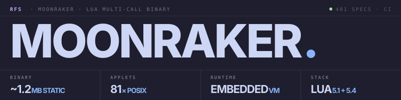

A BusyBox-style multi-call binary in Lua — 81 Unix utilities, one ~1.2 MB executable, native on Linux, Windows, and macOS.
$ moonraker seq 100 | moonraker sort -rn | moonraker head -3 100 99 98 $ moonraker awk -F, '{s+=$3} END{print s/NR}' data.csv 42.7 $ moonraker tar -czf src.tar.gz src/ --exclude='*.bak' $ moonraker sha256sum src.tar.gz d4f2a8b1c3e7… *src.tar.gz $ moonraker http -I -s https://example.com | moonraker head -1 HTTP/2 200
A familiar POSIX surface. Real flag coverage, not stubs. Same behavior on Windows, macOS, and Linux.
Every common shell tool dispatched through a single executable — POSIX coreutils plus http, dig, nc, hashing, archives, watch, timeout, base64, uuidgen, and the BusyBox parity gap-fillers. Run moonraker install-aliases once and ls just works.
Everything links statically into one binary via luastatic: LPeg, zlib, bzip2, LuaSocket, pure_lua_SHA. No runtime Lua needed, no shared libraries to ship.
find with -exec, -prune, parens. sed with addresses and in-place edit. awk with BEGIN/END, patterns, arrays, gsub, full control flow, 20 built-ins. tar with -z (gzip) and -j (bzip2).
Binary-safe through cat/tee/gzip. tail -f follows files. Streaming yes | head -5 won't slurp infinite input.
Hash digests verified against published RFC test vectors. tar archives round-trip with the system tar on both gzip and bzip2. zip/unzip round-trip with the system unzip.
One Lua file per applet — most are 50–250 lines. Add a new one by dropping a module into src/applets/ with {name, help, aliases, main} and re-running lua build.lua --regen-only.
A small regex.lua compiles POSIX extended regex (anchors, char classes, POSIX named classes, alternation, quantifiers, backrefs in replacement) to LPeg patterns. Used by sed and awk.
moonraker update hits the GitHub Releases API, downloads the matching asset, smoke-tests --version, and atomically swaps. The previous binary stays alongside as .old for one-step revert.
Each applet implements common POSIX flags. Run moonraker <applet> --help for per-applet usage.
Clean separation between the entry point, dispatch logic, applet registry, and per-applet implementations. Adding an applet means dropping one file.
src/main.lua stashes arg[0] as the running binary path (so update can find itself), then enters cli.main(arg). The luastatic-built binary uses the same entry — no separate path.
src/cli.lua resolves the applet from argv[0] basename (multi-call) or argv[1] (subcommand). Intercepts --help only; -h stays free for applet flags like df -h.
src/applets/init.lua (auto-generated by build.lua) loads each applet module on startup. Each module exposes {name, help, aliases, main(argv) -> integer}.
81 modules in src/applets/, ranging from ~10 lines (true) to ~1170 (awk). Read stdin via io.stdin; write via io.stdout / io.stderr. Return 0 / 1 / 2 (success / runtime / usage).
Pre-built binaries on the releases page. Build from source for the full experience.
# From source — Lua 5.4 (or 5.1) + LuaRocks + a C toolchain $ git clone https://github.com/Real-Fruit-Snacks/Moonraker.git $ cd Moonraker $ luarocks install --local luastatic busted luacheck luafilesystem $ make build → dist/moonraker (~1.2 MB, 81 applets) $ ./dist/moonraker --version moonraker 0.1.0 # Or pick a subset $ lua build.lua --preset minimal → dist/moonraker (4 applets: true, false, echo, pwd) $ lua build.lua --applets ls,cat,grep,sed,awk → dist/moonraker (custom)
# Daily pipelines (find + awk, all in one binary) $ moonraker find . -name '*.lua' -mtime -7 $ moonraker awk -F, '{s+=$3} END{print s/NR}' data.csv # sed with full ERE $ moonraker sed -E 's/(\w+) (\w+)/\2 \1/' < pairs.txt # HTTP + DNS without curl/dig installed $ moonraker http -H 'Authorization: Bearer $T' https://api/me $ moonraker dig MX gmail.com +short # Tab-complete applets, then keep current $ moonraker completions bash | sudo tee /etc/bash_completion.d/moonraker $ moonraker update # self-update from latest release